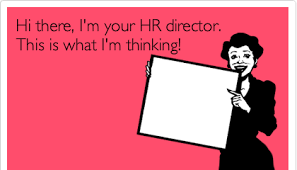
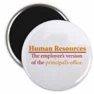
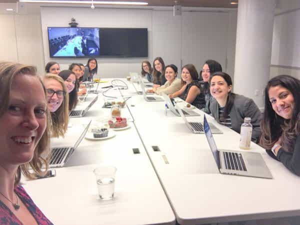
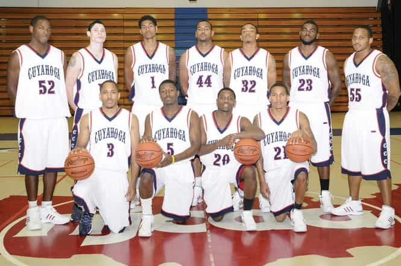
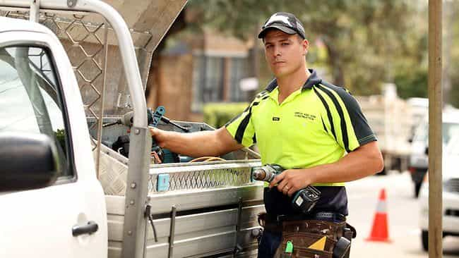

< < < Back
The True Meaning Of Diversity Is Discrimination – Return Of Kings
Diversity is a buzz word we keep hearing more and more, especially in the workplace. On the surface the concept appears warm and fuzzy, conjuring up images of all colours, creeds and sexualities linking arms, dancing and singing Kumbaya as productivity and sales skyrocket thanks to all that tolerance and understanding.
But what does diversity actually mean in practice?
A complete dismantling of the meritocracy in order to appear politically correct.
Originally introduced to assist potentially underserved black people, diversity now commonly manifests itself as promoting women at all costs. Targets and quotas are set for female representation with little or no thought given to whether deliberately not hiring on ability, qualifications, experience and even personality is actually in an organisation’s best interests, or fair to prospective candidates. Chief advocates of diversity are left-wing politicians and government departments, although we’ve reached the stage where most private sector organisations at the very minimum pay lip service to the idea.
Everybody deserves a fair go. However, diversity has become all about wherever possible ensuring anybody besides a heterosexual white male is given preference for a job, promotion or other opportunity. This isn’t progressive thinking, it’s blatant discrimination. Quotas, affirmative action, government and corporate policies are all designed to remove a level playing field. They also seek to limit individual freedom, and are therefore yet another extension of the ever-growing Nanny State.
HR feminists are rarely this hot, but you get the picture…
The chief beneficiaries of diversity programs are white, middle-class women. This is not a coincidence. The vast majority of Human Resource departments are run by feminist women (typically white, middle-class women) who intervene unnecessarily in the recruitment process, more often than not to justify their own existence. Many harbour ill feeling against not just the man who rejected them years ago, but all men. If you are a man and applying for a job, you are guilty by association. ‘Diversity’ is predicated on the notion of “privilege,” a central tenet of the Social Justice Warrior cult, and ruthlessly enforced by HR.

The HR woman’s “expert” opinion and single-minded determination to follow diversity principles, targets and quotas has more weight than a person’s qualifications, experience and even whether senior people in the organisation know a candidate personally and they have great mutual respect based on prior successful business relationships. Even if a garden gnome (HR worker) isn’t obstructive and doesn’t have an agenda, can they really know if you are the best candidate for a job because they were attracted to the way your CV was formatted, or because they asked you to describe your greatest weakness and liked your answer?

If you do get the job, you’ll soon realise merely opening a door for a female colleague risks drawing the ire of HR, and possible punitive consequences. In my experience you have to tiptoe around most women in the workplace. You have to be extremely careful not to hurt their feelings or offend them, and therefore it is harder to have full and open debate about issues. Forget any kind of humorous banter that might make spending 40+ hours a week in an office slightly tolerable. Even innocent comments without a hint of malice risk landing you in hot water.
This video demonstrates how feminised a workplace becomes when diversity principles are put front and centre. A “Girls’ Club” with tonnes of rules and guidelines inevitably stifles creativity and productivity, and most men go crazy working in such a sterile environment. It is in our nature to yearn for freedom, and many of us have a problem with authority. Most women on the other hand prefer rules, structure and organisation. This explains why a majority of men vote for conservative parties that value freedom and self-reliance, whilst most women vote for left-wing parties and Big Daddy Government.

The Huffington Post is a strong advocate of diversity, but check out how diverse their meetings are…
When women exceed 50% of university enrollments or government departments, they never feel sorry for men and demand they get 50% representation. Promoting diversity is only considered necessary when women are the minority. That is why we see calls for quotas for masculine jobs like the police, but not female dominated professions like teaching and nursing. Some police forces have deliberately lowered recruitment standards to enable more women into the ranks. How does that deliver a safer society? They reckon the old tests were discriminatory against women. Where else in life would not being good enough be considered discrimination? If I tried out for my local football club, and I did poorly in the sprints and time trial, do you reckon I could successfully blame discrimination for not making the team?
Common sense has gone out the window in the West
Organisations are at their best not when virtue signalling, but when seeking out the best possible talent. Think how ridiculous it would be if a professional basketball team announced quotas for White and Asian players. I don’t see any difference between that and diversity programs favouring policewomen. After all, it’s not the fault of White and Asian players they weren’t born as tall, fast and athletic! These black athletes were born with privilege! It’s so unfair! Don’t we need to reduce the number of black players so teams are more diverse? Of course not, because that would lower the standard of the competition. Nobody wants to see that.

True equality means equality of opportunity, not outcome. Everybody should have the right to put their hand up for a job, but they should be judged on merit, not the trendy left-wing cause of the day. As things currently stand, we frequently have one person in the fight with both arms tied behind their back, and as a result the lesser fighter is often winning. That’s not right. It goes to show how far we’ve gone down the rabbit hole that someone who argues for rewards to be based on merit is seen as sexist, but someone who argues rewards should come solely due to a person’s sex is considered to be fair and reasonable.
Irrationality creates opportunities for those who resist it
There’s a massive competitive advantage to be gained by hiring on merit, not diversity. I am good friends with a Senior Manager at a well-known public company. The economy has been flat for some time now, and they had to make some savings. The first thing they did was get rid of their HR Manager, and the company now handles all recruitment directly. My friend tells me they don’t really even notice she is gone, other than at the end of the financial year when they have an extra $100,000 in their accounts.
So if diversity actually reduces productivity, why is there such a big push towards it? Why is it eagerly swallowed up by everybody from banks, media, defence companies to the AFL? The answer is they feel they have to, or left-wing governments, media and SJWs will come after them, threatening their livelihoods. For many industries, government contracts and grants can make or break a company. Governments are also trying to muscle in on the private sector by implementing draconian laws on board composition.
If I am able to successfully run a profitable company, why should I listen to the government tell me who I should employ, or who I should put on my Board? Have you seen how bad governments are at managing money? If diversity is so great, I will be left behind, forced to change my ways or go broke. That is something I am prepared to accept. If women don’t like the status quo, there’s nothing preventing them from starting their own companies. I suspect most high calibre women do exactly that, whilst the ones that whine about sexism are simply entitled and think the world owes them a living simply because they have a vagina.
You should be extremely skeptical of other left-wing propaganda on workplace relations, and consider what is driving it. The pay gap myth is an excellent example. If women really earned 78 cents for every dollar a man earns for doing exactly the same work, companies would have stopped hiring men years ago. You don’t seriously believe The Patriarchy is sacrificing billions in profits just to keep those pesky women down do you?

The pay for being a tradie is solid these days, plus you get to be your own boss and feel like a man
All this evidence isn’t worth losing your job over – and that is a definite risk if you question the diversity agenda publicly. However, it highlights why entrepreneurship or learning a trade is a far better option for young men today than working in the corporate or government sectors where even if they land a job, they will be constantly running the gauntlet of HR feminazis. Most men with blood running through their veins will feel like caged animals in a modern PC office environment. If you value freedom and don’t want to be a slave, why not be the master or your own destiny instead? In most jurisdictions, quotas can’t be forced on small companies and start-ups.
Next time you hear about the merits of diversity, remember what it really means: deliberately not hiring the best person for the job, just to look politically correct. If you haven’t already done so, think about what you can do to set yourself up in a way where you can maintain autonomy in your life and be the master of your own destiny. We only live once. Do you really want to live like a prisoner?
Read More: Huffington Post Staff Photo Shows That Their Idea Of “Diversity” Is Hiring Only Non-Black Women